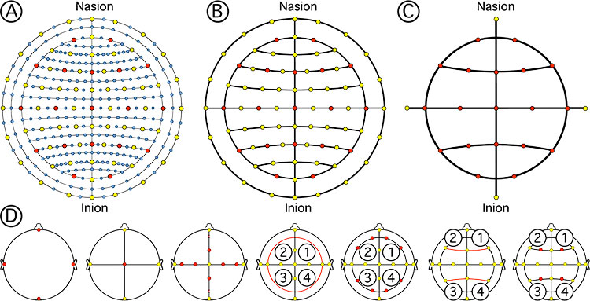

Mesh2EEG
Mesh2EEG is a collection of Matlab functions for automatic calculation of the International 10-20, 10-10, and 10-5 scalp coordinates of EEG electrodes on a boundary element mesh of a human head. Download
Reference
Giacometti, P., Perdue, K.L., Diamond, S.G. (2014) Algorithm to find high density EEG scalp coordinates and analysis of their correspondence to structural and functional regions of the brain. J Neurosci Methods. 229:84-96.
Figure 1: Illustration below shows the EEG positioning computational process. a) The algorithm starts with a 3D surface mesh of the head and fiducial positions identified by the user. b) The plane that intersects the mesh at those positions is found. c) The intersection points between the plane and the mesh are calculated. d) The subset of points that delimit the arc are identified. e) The positions at the specified percentages (5% for the case of the 10-5 positioning system) are calculated. f) The points that delimit new arcs from previously calculated points are identified and the process repeats for the new arcs. g) All the arcs necessary to calculate all 10-5 positions are found. h) With this method, all three sets of positions can be calculated, where blue dots show the 10-5, red circles show the 10-10 system, and yellow stars show the 10-20 system.

Figure 2: EEG electrode layouts and positioning algorithm. A) 10-5 positioning system. B) 10-10 positioning system. C) 10-20 positioning system. The set of positions that the software produces are labeled according to the 10-5 nomenclature proposed by Oostenveld and Praamstra. D) EEG positioning order of operations. (From left to right) The fiducials are identified in the head (Nasion, inion, left and right preauriculars). Arcs following the contour of the scalp connect those points. The central position (Cz) is identified at the midpoint of the two arc lengths. EEG locations are identified by percentage subdivisions of the arcs. Locations are used to form new arcs that delimit the circumference of the head. Four quadrant arcs are found connecting those points. Circumference points are calculated from percentage subdivisions of quadrant arcs. Points in the inion-nasion arc and circumference are connected with arcs. EEG positions are found on those arcs by percentage subdivisions.
Please fill out the following form before downloading the software. We will not share your name with anyone.